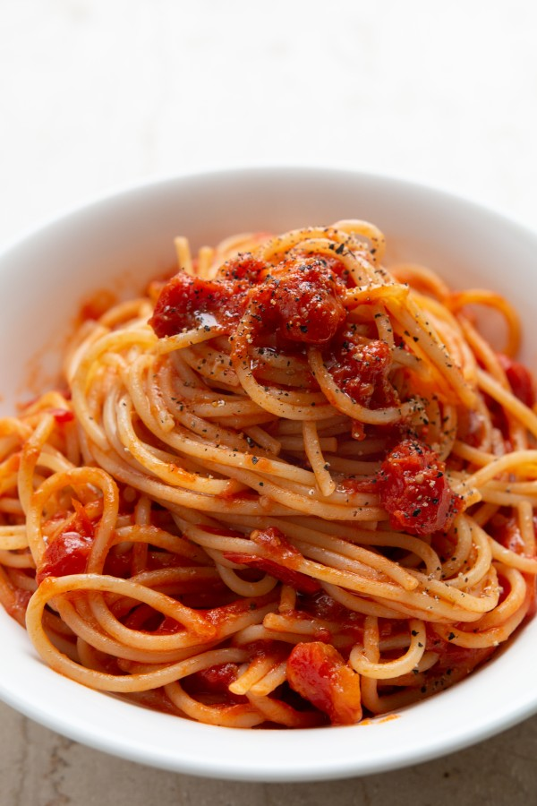

Czas przygotowania: 15 minut pracy + 30 minut czekania
Składniki na 4 - 6 porcji z makaronem:
3 – 4 ząbki czosnku
3 łyżki oliwy
150 g pomidorków koktajlowych
1 suszony pomidor, opcjonalnie
1 puszka pomidorów, krojonych
1 cebula, średnia
1/3 marchewki
2 – 3 łyżeczki sosu sojowego
sól i czarny pieprz
Do podania: 300 – 400 g ulubionego makaronu, tradycyjnego lub z ciecierzycy
Możliwe bajery: płatki chili, oliwki, kapary, gałązki bazylii lub pietruszki, nać selera, wegańskie klopsiki lub płatki drożdżowe
Przygotowanie:
Przygotować składniki sosu. Czosnek obrać i zostawić w całości; suszonego pomidora posiekać; cebulę obrać i przekroić na pół; marchew obrać. Do małego rondelka włożyć czosnek, wlać oliwę i dopiero wtedy zacząć podgrzewać. Podgrzewać przez 5 – 7 minut na małym ogniu do momentu, aż czosnek będzie rumiany. Usmażony czosnek wyjąć, dodać pomidorki i suszonego pomidora, jeśli używamy. Dusić na średnim ogniu przez 5 – 6 minut, aż się rozpadną i zmienią w gęstą, błyszczącą, bulgoczącą masę o słodkim zapachu. Wtedy dodać puszkę pomidorów, cebulę, marchew, sos sojowy, sól i czarny pieprz i dusić bez przykrycia przez 20 – 30 minut, sos powinien dość intensywnie bulgotać. To ważny krok. W międzyczasie wstawić wodę, ugotować wybrany makaron i zachować około pół szklanki wody z gotowania makaronu. Gęsty, zredukowany sos (o taki) spróbować i doprawić w razie potrzeby solą. Dać sobie kilka sekund na kontemplacje jego umamicznego smaku. Wyłowić cebulę oraz marchew, dodać ugotowany makaron oraz stopniowo wlewać po kilka łyżek zachowanej wody z gotowania makaronu. Podgrzewać chwilę razem w razie potrzeby dolewając więcej wody, na koniec obsypać czarnym pieprzem, pokrojonym usmażonym czosnkiem z solą lub innymi ulubionymi dodatkami i podawać.
Propozycja podania:
